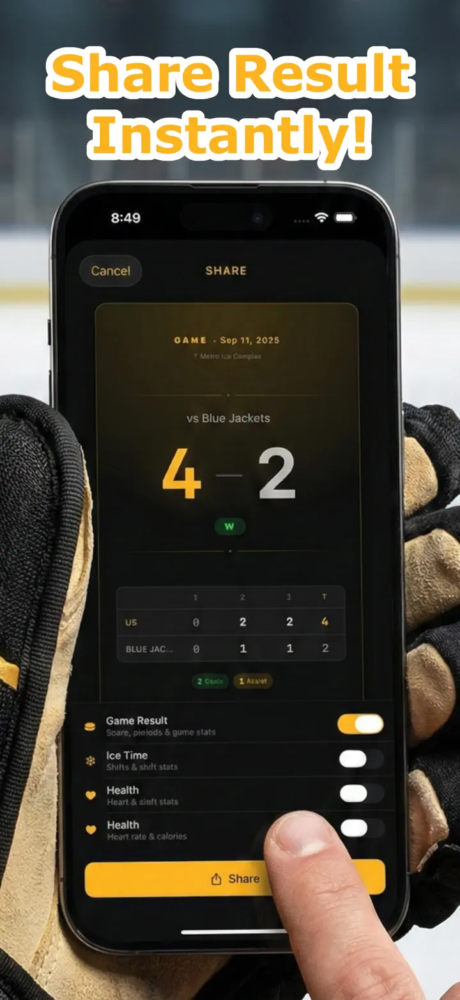

Ice Time Track
Hockey Byte Träningsspår
Automatisk istidsspårning med Apple Watch – nu med utrustningsspårning och påminnelser om skridskoslipning. Se byten, statistik och hälsa efter varje match.
Hämta i App Store
Om appen
Dina byten. Spårade automatiskt.
Ice Time Track använder din Apple Watch för att upptäcka när du åker skridskor och när du sitter på bänken. Inga knappar, inget krångel. Starta bara en session och spela.
HUR DET FUNGERAR
Vår rörelsedetekteringsalgoritm analyserar accelerometer-, gyroskop- och GPS-data för att skilja skridkoåkning från vila. Din iPhone synkroniserar live-uppdateringar så du kan se statistik i realtid eller efter matchen.
FUNKTIONER
- Automatisk bytesdetektering, rörelse- och hälsospårning
- Total istid och uppdelning per byte
- Matchlogg – mål, utvisningar, pauser
- Puls och kalorier per byte
- Visuell tidslinje för is/bänk-mönster
- Sessionshistorik med trender
- Platsmarkering för varje ishall
- Match-, tränings- och träningsmatchlägen
- Valfria haptiska varningar
- Exportera data till CSV eller JSON
APPLE INTEGRATION
Fungerar med Apple Watch. Synkroniserar med Apple Hälsa.
INTEGRITET
All data lagrad lokalt. Inget konto krävs.
Byggt av ishockeyspelare för ishockeyspelare. Känn din istid. Lyft ditt spel.
Ice Time Track förvandlar din Apple Watch till en intelligent hockeykompanjon som vet exakt när du är på isen och när du är på bänken. Inga knappar. Inga distraktioner. Ren automatisk spårning så du kan fokusera på att spela ditt bästa.
HUR DET FUNGERAR
Starta en session på din Apple Watch och glöm den. Vår avancerade rörelsedetektering analyserar data i realtid. Din iPhone håller sig synkroniserad med live-uppdateringar – se din statistik från läktaren eller gå igenom allt efter slutsignalen.
VAD DU KOMMER UPPTÄCKA
- Total Istid — Vet exakt hur många minuter du spenderade där det räknas
- Byte-för-Byte Uppdelning — Varje byte med varaktighet, puls och kalorier
- Matchloggar – mål/utvisningar per period
- Pulsspårning — Övervaka ansträngning under åkning vs. återhämtning
- Förbrända Kalorier — Exakta data synkroniserade från Apple Hälsa
- Sessionstidslinje — Visuellt diagram över ditt is/bänk-mönster
- Platsminne — Automatisk markering av ishallen
- Historiska Trender — Jämför sessioner och spåra framsteg
BYGGT FÖR VARJE SKRIDSKOÅKARE
Oavsett om du spelar korpen, tränar hårt eller tävlar i träningsmatcher – Ice Time Track anpassar sig. Tagga sessioner efter typ, lägg till motståndarnamn och bygg din personliga hockeydagbok.
SÖMLÖS APPLE INTEGRATION
- Synkroniserar träningar till Apple Hälsa
- Körs i bakgrunden under sessioner
- Valfria haptiska varningar vid is/bänk-övergångar
- Optimerad för låg batteripåverkan
INTEGRITET FÖRST
Dina data förblir dina. Lagrade lokalt på dina enheter. Inga konton. Ingen data såld. Aldrig.
FRÅN SPELARE TILL SPELARE
Byggt av hockeyälskare trötta på att gissa istid. Riktiga siffror. Riktiga insikter. Noll friktion.
Ladda ner nu och undra aldrig mer över din istid.
Snöra skridskorna. Droppa pucken. Vi tar resten.
Privacy Policy: https://masawata.net/privacy-policy.html Terms Of Service: https://www.apple.com/legal/internet-services/itunes/dev/stdeula/
Skärmavbilder



Ice Time Track
Automatisk istidsspårning med Apple Watch – nu med utrustningsspårning och påminnelser om skridskoslipning. Se byten, statistik och hälsa efter varje match.
Hämta i App Store